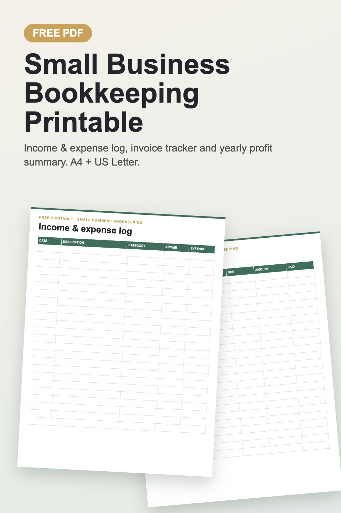

A simple paper bookkeeping log for freelancers, side hustles and small shops. Write down every sale and expense, track unpaid invoices and see your profit for the year. No sign-up, just download.
Download free PDF (A4)Download free PDF (US Letter)
The Small Business Bookkeeping Spreadsheet for Excel and Google Sheets does the math: pick a category, type the amount, and the profit and loss by month, tax set-aside, invoice status and a dashboard with charts update by themselves.
See the bookkeeping spreadsheetMore free printables: free monthly budget template, free 2027 calendar.